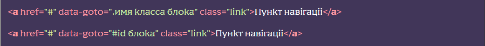
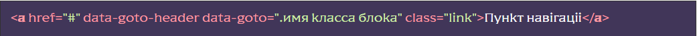
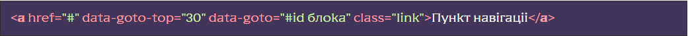
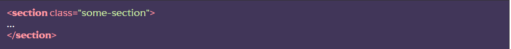
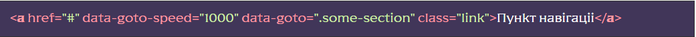

Підключення функціоналу
[JS] У файлі js/app.js розкоментувати рядок flsScroll.pageNavigation();
[HTML]До елементів навігації (пунктів меню), або до довільного об’єкта, додаємо HTML-атрибут data-goto, а в якості значення вказуємо CSS селектор блоку до якого потрібно прокрутити:
Якщо потрібно, щоб скролл враховував шапку (не докручував на висоту шапки, використовується при фіксованих шапках) потрібно додати до об’єкта навігації атрибут data-goto-header:
Якщо потрібно, щоб скролл не докручував до блоку на вказану висоту, необхідно додати до об’єкта навігації атрибут data-goto-top, а в якості значення вказати число – необхідну висоту:
data-goto-top можна поєднувати з data-goto-header, тоді значення data-goto-top додасться до висоти шапки.
Додавання класу до поточного пункту навігації
Для включення функціоналу додавання класу підключаємо модуль спостерігача:
[JS] У файлі js/app.js розкоментувати рядок import
‘./libs/watcher.js’
[HTML] Для блоків до яких
прокручується сторінка додаємо атрибут data-watch зі значенням
navigator:
Після цього, при прокручуванні до хмари (об’єкту) навігації, до відповідного пункту навігації буде додано клас _navigator-active
Прокручування до потрібного блоку по хешу (при відкритті сторінки)
Для того щоб прокрутити сторінку до потрібного блоку при відкритті сторінки необхідно додати до адреси хеш, що містить ім’я класу потрібного блоку.
Приклад адресного рядка та потрібного блоку: Додавання функціоналу, плавне прокручування на iOS
За промовчанням, прокручування виконується методом scrollTo() з параметром behavior: “smooth” без застосування додаткових плагінів. Але це обмежує функціонал цього модуля – не можна вказати швидкість прокручування, а також можуть виникнути проблеми в деяких версіях браузерів на iOS. Для вирішення всіх проблем можна підключити додатковий плагін SmoothScroll, зробити це можна у файлі js/files/scroll/gotoblock.js розкоментувавши рядок import SmoothScroll from ‘smooth-scroll’; подальше перемикання прокручування на плагін відбудеться автоматично.
При роботі з плагіном з’являється можливість вказати швидкість прокручування, для цього елементу навігації потрібно додати атрибут data-goto-speed і вказати число, що означає кількість мілісекунд за які прокручується (1000 = 1 секунда), за замовчуванням 500.
Розташування та додаткові дані
Функціонал знаходиться у js/files/scroll/scroll.js. Назва функціі pageNavigation(). Допоміжний модуль прокручування gotoblock знаходиться у js/files/scroll/gotoblock.js. Модуль спостерігача знаходиться у файлі js/libs/watcher.js.